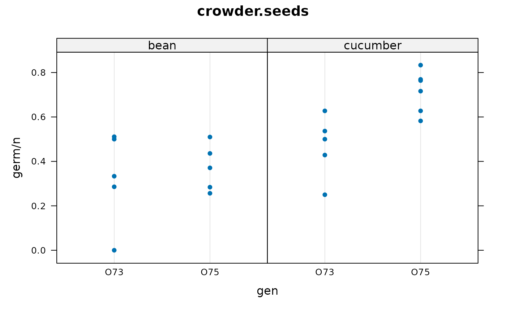

Example generalized linear mixed model analysis with different packages
Kevin Wright
Source:vignettes/agridat_mixed_model_example.Rmd
agridat_mixed_model_example.Rmd
The response variable on the vertical axis is the germination percent.
There are two predictive factors, gen (O73, O75) and
extract (bean/cucumber).
Each dot is for a separate plate.
GLM (not mixed–no random plate)
brms
It takes a minute or so to compile Stan program…
Note, in Emacs brms ends the R process for some reason!
if(require(brms)){
m1.brms <- brms::brm( germ|trials(n)~ gen*extract,
data = dat,
family = binomial,
chains=3, iter=3000, warmup=1000)
summary(m1.brms)
# round( summary(m1.brms)$fixed[,1:4] , 2)
# Estimate Est.Error l-95% CI u-95% CI
# Intercept -0.42 0.18 -0.77 -0.06
# genO75 -0.14 0.22 -0.56 0.29
# extractcucumber 0.55 0.25 0.07 1.05
# genO75:extractcucumber 0.77 0.30 0.18 1.36
}glm
# ----- GLM.
# family=binomial() fixes dispersion at 1
# family=quasibinomial() estimates dispersion, had larger std errors
m1.glm <- glm(cbind(germ,n-germ) ~ gen*extract,
data=dat,
#family="binomial",
family=quasibinomial()
)
summary(m1.glm)
## round(summary(m1.glm)$coef,2)
## Estimate Std. Error t value Pr(>|t|)
## (Intercept) -0.41 0.25 -1.64 0.12
## genO75 -0.15 0.30 -0.48 0.64
## extractcucumber 0.54 0.34 1.58 0.13
## genO75:extractcucumber 0.78 0.42 1.86 0.08rstan
# ----- Stan using pre-built models from rstanarm
libs(tidyverse, rstan, rstanarm,bayesplot)
set.seed(42)
m1.stan <- stan_glm( cbind(germ,n-germ) ~ gen*extract,
data=dat,
family = binomial(link="logit") )
summary(m1.stan)
## round(posterior_interval(m1.stan, prob=.90),3)
# 5% 95%
# (Intercept) -0.728 -0.115
# genO75 -0.506 0.243
# extractcucumber 0.133 0.947
# genO75:extractcucumber 0.255 1.267
libs(bayesplot)
mcmc_areas(m1.stan, prob = 0.9) +
ggtitle("Posterior distributions",
"with medians and 95 pct intervals")Generalized Linear Mixed Model
asreml
if(require(asreml)){
m1.asreml <- asreml(germ ~ gen*extract,
data=dat,
random= ~ plate,
family=asr_binomial(dispersion=1, total=n))
summary(m1.asreml)
##
## effect
## (Intercept) -0.47
## gen_O73 0.00
## gen_O75 -0.08
## extract_bean 0.00
## extract_cucumber 0.51
## gen_O73:extract_bean 0.00
## gen_O73:extract_cucumber 0.00
## gen_O75:extract_bean 0.00
## gen_O75:extract_cucumber 0.83
}MASS::glmmPQL
# --- GLMM. Assumes Gaussian random effects
libs(MASS)
m1.glmm <- glmmPQL(cbind(germ, n-germ) ~ gen*extract,
random= ~1|plate,
family=binomial(), data=dat)
summary(m1.glmm)
## round(summary(m1.glmm)$tTable,2)
## Value Std.Error DF t-value p-value
## (Intercept) -0.44 0.25 17 -1.80 0.09
## genO75 -0.10 0.31 17 -0.34 0.74
## extractcucumber 0.52 0.34 17 1.56 0.14
## genO75:extractcucumber 0.80 0.42 17 1.88 0.08glmmTMB
libs(glmmTMB)
m1.glmmtmb <- glmmTMB(cbind(germ, n-germ) ~ gen*extract + (1|plate),
data=dat,
family=binomial)
round(summary(m1.glmmtmb)$coefficients$cond , 2)
## Estimate Std. Error z value Pr(>|z|)
## (Intercept) -0.45 0.22 -2.03 0.04
## genO75 -0.10 0.28 -0.35 0.73
## extractcucumber 0.53 0.30 1.74 0.08
## genO75:extractcucumber 0.81 0.38 2.11 0.04hglm
# ----- HGML package. Beta-binomial with beta-distributed random effects
if(require(hglm)){
m1.hglm <- hglm(fixed= germ/n ~ I(gen=="O75")*extract, weights=n, data=dat,
random=~1|plate, family=binomial(), rand.family=Beta(),
fix.disp=1)
summary(m1.hglm)
# round(summary(m1.hglm)$FixCoefMat,2)
## Estimate Std. Error t-value Pr(>|t|)
## (Intercept) -0.47 0.24 -1.92 0.08
## I(gen == "O75")TRUE -0.08 0.31 -0.25 0.81
## extractcucumber 0.51 0.33 1.53 0.16
## I(gen == "O75")TRUE:extractcucumber 0.83 0.43 1.92 0.08
}INLA
See: https://haakonbakka.bitbucket.io/btopic102.html
if(require(INLA)){
#gen,extract are fixed. plate is a random effect
#Priors for hyper parameters. See: inla.doc("pc.prec")
hyper1 = list(theta = list(prior="pc.prec", param=c(1,0.01)))
m1.inla = inla(germ ~ gen*extract + f(plate, model="iid", hyper=hyper1),
data=crowder.seeds,
family="binomial", Ntrials=n,
control.family=list(control.link=list(model="logit")))
round( summary(m1.inla)$fixed, 2)
## mean sd 0.025quant 0.5quant 0.975quant mode kld
## (Intercept) -0.47 0.24 -0.96 -0.46 0.00 -0.46 0
## genO75 -0.08 0.31 -0.68 -0.09 0.54 -0.09 0
## extractcucumber 0.53 0.33 -0.13 0.53 1.18 0.53 0
## genO75:extractcucumber 0.82 0.43 -0.01 0.82 1.69 0.82 0
} rjags
Requires JAGS to be installed.
# JAGS/BUGS. See https://mathstat.helsinki.fi/openbugs/Examples/Seeds.html
# Germination rate depends on p, which is a logit of a linear predictor
# based on genotype and extract, plus random deviation to intercept
# To match the output on the BUGS web page, use: dat$gen=="O73".
# We use dat$gen=="O75" to compare with the parameterization above.
jdat =list(germ = dat$germ, n = dat$n,
root = as.numeric(dat$extract=="cucumber"),
gen = as.numeric(dat$gen=="O75"),
nobs = nrow(dat))
jinit = list(int = 0, genO75 = 0, extcuke = 0, g75ecuke = 0, tau = 10)
# Use logical names (unlike BUGS documentation)
mod.bug =
"model {
for(i in 1:nobs) {
germ[i] ~ dbin(p[i], n[i])
b[i] ~ dnorm(0.0, tau)
logit(p[i]) <- int + genO75 * gen[i] + extcuke * root[i] +
g75ecuke * gen[i] * root[i] + b[i]
}
int ~ dnorm(0.0, 1.0E-6)
genO75 ~ dnorm(0.0, 1.0E-6)
extcuke ~ dnorm(0.0, 1.0E-6)
g75ecuke ~ dnorm(0.0, 1.0E-6)
tau ~ dgamma(0.001, 0.001)
sigma <- 1 / sqrt(tau)
}"
libs(rjags)
oo <- textConnection(mod.bug)
j1 <- jags.model(oo, data=jdat, inits=jinit, n.chains=1)
close(oo)
c1 <- coda.samples(j1, c("int","genO75","g75ecuke","extcuke","sigma"),
n.iter=20000)
summary(c1) # Medians are very similar to estimates from hglm
# libs(lucid)
# print(vc(c1),3)
## Mean SD 2.5% Median 97.5%
## extcuke 0.543 0.331 -0.118 0.542 1.2
## g75ecuke 0.807 0.436 -0.0586 0.802 1.7
## genO75 -0.0715 0.309 -0.665 -0.0806 0.581
## int -0.479 0.241 -0.984 -0.473 -0.0299
## sigma 0.289 0.142 0.0505 0.279 0.596
# Plot observed data with HPD intervals for germination probability
c2 <- coda.samples(j1, c("p"), n.iter=20000)
hpd <- HPDinterval(c2)[[1]]
med <- summary(c2, quantiles=.5)$quantiles
fit <- data.frame(med, hpd)
libs(latticeExtra)
obs <- dotplot(1:21 ~ germ/n, dat,
main="crowder.seeds", ylab="plate",
col=as.numeric(dat$gen), pch=substring(dat$extract,1))
obs + segplot(1:21 ~ lower + upper, data=fit, centers=med)R2jags
libs("agridat")
libs("R2jags")
dat <- crowder.seeds
# To match the output on the BUGS web page, use: dat$gen=="O73".
# We use dat$gen=="O75" to compare with the parameterization above.
jdat =list(germ = dat$germ, n = dat$n,
root = as.numeric(dat$extract=="cucumber"),
gen = as.numeric(dat$gen=="O75"),
nobs = nrow(dat))
jinit = list(list(int = 0, genO75 = 0, extcuke = 0, g75ecuke = 0, tau = 10))
mod.bug = function() {
for(i in 1:nobs) {
germ[i] ~ dbin(p[i], n[i])
b[i] ~ dnorm(0.0, tau)
logit(p[i]) <- int + genO75 * gen[i] + extcuke * root[i] +
g75ecuke * gen[i] * root[i] + b[i]
}
int ~ dnorm(0.0, 1.0E-6)
genO75 ~ dnorm(0.0, 1.0E-6)
extcuke ~ dnorm(0.0, 1.0E-6)
g75ecuke ~ dnorm(0.0, 1.0E-6)
tau ~ dgamma(0.001, 0.001)
sigma <- 1 / sqrt(tau)
}
parms <- c("int","genO75","g75ecuke","extcuke","sigma")
j1 <- jags(data=jdat, inits=jinit, parms, model.file=mod.bug,
n.iter=20000, n.chains=1)
print(j1)
## mu.vect sd.vect 2.5% 25% 50% 75% 97.5%
## extcuke 0.519 0.325 -0.140 0.325 0.531 0.728 1.158
## g75ecuke 0.834 0.429 -0.019 0.552 0.821 1.101 1.710
## genO75 -0.096 0.305 -0.670 -0.295 -0.115 0.089 0.552
## int -0.461 0.236 -0.965 -0.603 -0.455 -0.312 0.016
## sigma 0.255 0.148 0.033 0.140 0.240 0.352 0.572
## deviance 103.319 7.489 90.019 98.010 102.770 108.689 117.288
traceplot(as.mcmc(j1))
densityplot(as.mcmc(j1))
HPDinterval(as.mcmc(j1))
}